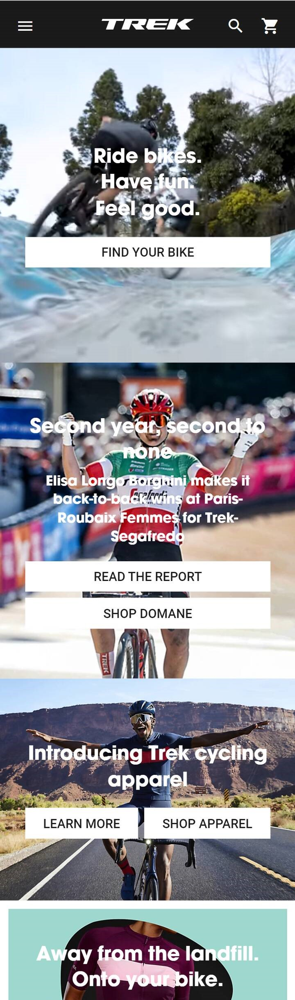
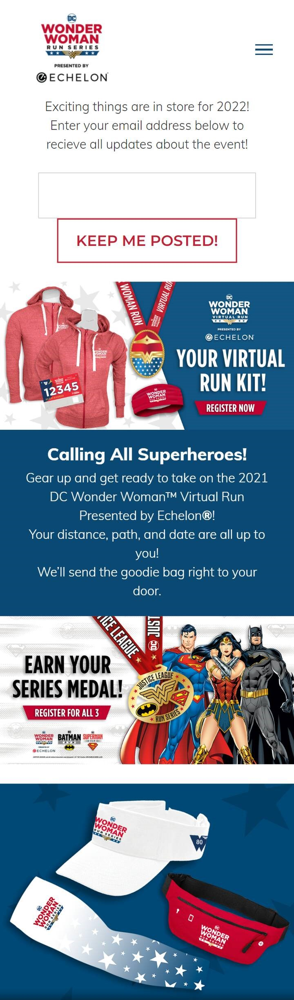
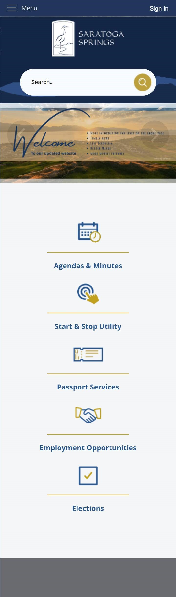

Repetition
Trek Mountain Bikes
trekbikes.com This Trek Mountain Bike website is a great example of Repetition. Each photo is organized the same way, with a title and one or more boxes that link to "Learn More" or "Shop".
Contrast
DC Wonder Woman Run
dcwonderwomanrun.com The DC Wonder Woman Website is a great example of Color Contrast. The red, white, and blue help call attention to different areas of the page, such as the "Register Now" button.
Proximity
Saratoga Springs City
saratogaspringscity.com The Saratoga Springs City Website is a great example of Proximity. Each section of the page is grouped together so you understand that they belong in the same section.